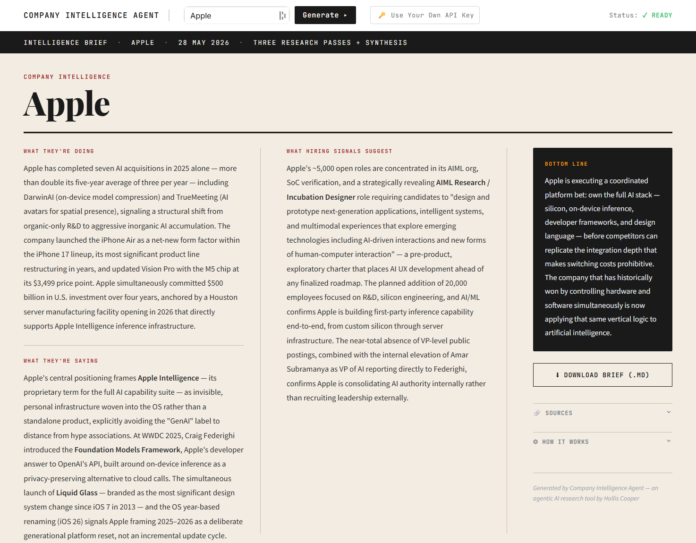
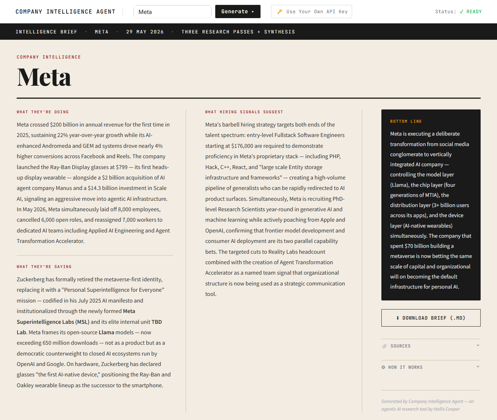

Company Intelligence Agent
A multi-pass agentic AI pipeline that turns a company name into a 1-page executive intelligence brief in under 2 minutes.
Stack: Python · Streamlit · Claude Sonnet 4.6 / GPT-4o · Anthropic & OpenAI web search · Hugging Face Spaces

Why I Built This
Competitive research is one of those tasks that's high-value but easy to skip — it takes 30–45 minutes to do properly, so it only happens when there's a specific forcing function (a sales call, a board question, a new hire joining the team). Most of the time, you go in underprepared.
I'd already built a Claude Code skill called Competitive Intelligence for internal use at Blackthorn — it's a targeted tool for understanding how Blackthorn stacks up against specific competitors. This app is something different: a general-purpose intelligence tool for any public company, built as a standalone Streamlit app so anyone can use it without API access or a development environment.
It also gave me a real-world test case for multi-pass agentic pipelines: not a single LLM call, but a sequence of autonomous research steps that cross-reference each other before synthesizing a final output.
What It Produces
Every brief has the same four sections, regardless of company:
- What they're doing — concrete recent moves: product launches, acquisitions, partnerships, funding
- What they're saying — public narrative and positioning extracted from blog posts, exec interviews, and press statements
- What hiring signals suggest — talent strategy inferred from open roles, growing teams, and required skills
- Bottom line — one or two sentences on where the company is headed and what it signals
The fixed structure is intentional. It means every brief is comparable and skimmable, and it forces the model to find signal in each dimension even when a company is quiet publicly.
How It Works
The app runs four sequential API calls per company. The default mode uses Anthropic's Claude Sonnet 4.6 with its built-in web_search_20260209 tool; users can also switch to OpenAI (GPT-4o with web_search_preview). No separate search API key required — web search is bundled with whichever provider is selected.
The app ships with a built-in demo key (Anthropic, 3 runs per browser session). Users can bypass the limit by supplying their own Anthropic or OpenAI API key in the topbar.
- Disambiguation — a fast, cheap model (Claude Haiku / GPT-4o-mini) resolves the company name to a specific, unambiguous entity before any web search runs. Prevents the downstream passes from going off on the wrong company.
- News & announcements — searches for strategic moves from the last 12 months: product launches, M&A, funding, partnerships.
- Hiring signals — reads job boards to infer priorities and growth areas from open roles and required skills.
- Content & positioning — finds blog posts, conference talks, and press statements to extract public narrative.
- Synthesis — a final pass cross-references all three research outputs and writes the structured brief.
Pipeline
User inputs company name
│
├─ Disambiguation (fast model — no web search)
│
├── Pass 1: News & announcements (research model + web search)
├── Pass 2: Hiring signals (research model + web search)
└── Pass 3: Content & positioning (research model + web search)
│
▼
Synthesis: cross-reference all 3 passes → structured brief
│
▼
Cache result (24hr TTL) → render + offer markdown downloadResults are cached for 24 hours. Cache hits display a banner showing the original provider, model, and date, with a "Rerun fresh" link that regenerates using the currently selected provider. Every brief — both in the UI and as a downloadable markdown file — ends with an attribution line showing which provider and model generated it.
Sample Output

Security
Because the app takes arbitrary user input and passes it into an agentic pipeline, prompt injection was the primary attack surface. I treated it as a first-class concern from the start:
- Input sanitization — control characters, null bytes, and inputs over 100 characters are rejected before any API call
- Prompt injection guard — all research system prompts include an explicit instruction to treat the company name solely as a search subject, not a command
- HTML escaping — all model output is escaped before rendering to prevent XSS
- BYOK key handling — user-supplied API keys live in session state only; they are never logged, persisted, or echoed. Invalid keys raise a provider-aware error and do not consume a session run.
An adversarial test suite (tests/test_adversarial.py) verifies these defenses against direct injection, system prompt extraction, indirect injection via poisoned search results, and persona/jailbreak attempts. The suite is designed to run without API keys — no live model calls needed for the static tests.
What I Learned
Disambiguation is load-bearing. The first pass — resolving an ambiguous name like "Apple" or "Stripe" before any research runs — turned out to be the most important reliability investment. Without it, the downstream passes occasionally researched the wrong entity and produced confidently wrong output. A single cheap Haiku call eliminated the problem entirely.
Multi-pass beats single-pass for synthesis quality. A single prompt asking Claude to research news, hiring, and positioning simultaneously produced flatter output than giving each dimension its own pass. Separating the research phases lets the synthesis step work from concrete, independently-verified findings rather than blending three shallow searches into one response.
Caching changes the product feel entirely. Adding a 24-hour cache transformed the app from a tool that "runs a query" into one that "knows about companies." Returning instant results for recently searched companies made it feel significantly more capable than it would appear from the raw latency numbers on cold searches.